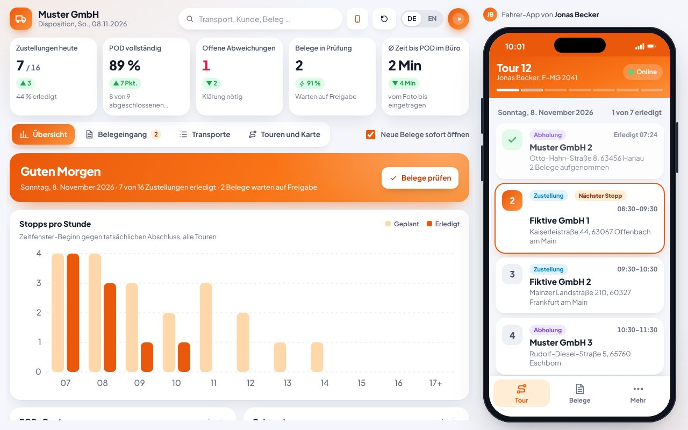
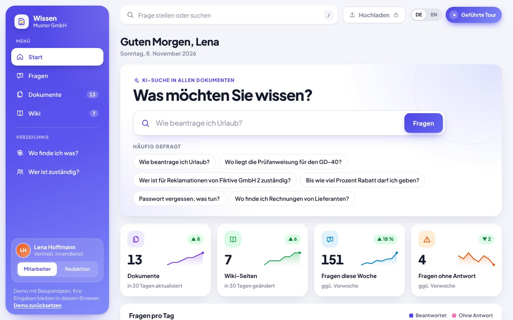

KI-Automatisierung
KI-Automatisierung, die Routinearbeit übernimmt
Wir automatisieren die Aufgaben, die Ihr Team jeden Tag Zeit kosten: Anfragen beantworten, Dokumente auslesen, Daten übertragen. Ihre Mitarbeiter prüfen und geben frei, statt abzutippen.
Rechnung_4711.pdf · Lieferant Becker GmbH
1.248,50 € · fällig am 08.11. · Bestell-Nr. 2093
Menge und Preis stimmen überein
Buchhaltung per Teams benachrichtigt
4 Sekunden statt ca. 10 Minuten
Typische Aufgaben
Was wir für Sie automatisieren
E-Mails sortieren und beantworten
Eingehende Anfragen werden erkannt, priorisiert und mit einem Antwortentwurf versehen.
Dokumente auslesen
Rechnungen, Lieferscheine und Formulare werden gelesen und die Daten strukturiert übernommen.
Daten zwischen Programmen übertragen
Informationen aus E-Mail, Formular oder PDF landen automatisch in CRM, ERP oder Tabelle.
KI-Chatbot für Website und Service
Beantwortet häufige Fragen rund um die Uhr auf Basis Ihrer eigenen Inhalte.
Angebote und Texte vorbereiten
Entwürfe für Angebote, Produkttexte oder Berichte aus Ihren vorhandenen Daten.
Interne Wissenssuche
Mitarbeiter finden Antworten in Handbüchern, Verträgen und Richtlinien per Frage statt Suche.
Demo zum Ausprobieren
KI im Einsatz
Zwei Beispiele, in denen KI Dokumente liest und Fragen beantwortet.

Proof of Delivery mit KI
Der Fahrer fotografiert Lieferschein, CMR oder Rechnung mit dem Handy. Die KI erkennt den Dokumenttyp, liest Kunde, Lieferant, Nummern und Mengen aus und trägt alles in Auftrag und Transport ein. Die Disposition sieht es sofort.
Das können Sie ausprobieren
- Beispiel-Lieferschein bei Stopp 3 fotografieren
- Unsichere Felder korrigieren und freigeben
- Offline gehen und später alles nachsenden

Wissensdatenbank mit KI-Suche
Fragen stellen statt suchen: Antworten aus PDFs, Word-Dateien und Wiki mit Quellenangabe. Dazu Dokumente hochladen, Wiki pflegen, „Wo finde ich was?“ und „Wer ist zuständig?“.
Das können Sie ausprobieren
- Frage stellen, Antwort mit Quellen öffnen
- Beispiel-PDF hochladen und sofort danach fragen
- Offene Frage als Redaktion beantworten
Ablauf
Vom Gespräch zur fertigen Lösung
Sie sehen früh ein Ergebnis und entscheiden Schritt für Schritt, wie es weitergeht.
- 130 Minuten · kostenlos
Erstgespräch
Wir klären, welche Aufgabe am meisten Zeit kostet und was eine Lösung bringen würde.
- 2ca. 1 Woche
Prototyp
Ein klickbarer Entwurf unter einer eigenen Vorschau-Adresse. Sie testen ihn mit echten Beispielen.
- 32 bis 6 Wochen
Umsetzung
Ausbau, Tests und Anbindung an Ihre Systeme wie Postfach, Kalender oder Buchhaltung.
- 4laufend
Betrieb
Hosting, Updates und Weiterentwicklung übernehmen wir auf Wunsch zum monatlichen Fixpreis.
Häufige Fragen
Antworten vorab
Brauche ich dafür eigene IT oder Programmierkenntnisse?
Nein. Wir übernehmen Entwicklung, Einrichtung und Betrieb. Sie brauchen nur Zugang zu den Systemen, die angebunden werden sollen.
Was passiert mit unseren Daten?
Wir klären im Erstgespräch, welche Daten verarbeitet werden und wo. Die Lösung wird passend zu Ihren Datenschutzvorgaben aufgebaut, inklusive Vertrag zur Auftragsverarbeitung.
Trifft die KI Entscheidungen allein?
Nur wenn Sie das wollen. Üblich ist, dass die KI vorbereitet und ein Mensch freigibt, zum Beispiel bei Angeboten oder Antworten an Kunden.
Was kostet eine Automatisierung?
Nach dem Erstgespräch erhalten Sie einen Festpreis. Kleinere Automatisierungen sind oft in wenigen Tagen umgesetzt.
Wo liegen unsere Daten und wie sicher sind sie?
Wir hosten in Rechenzentren innerhalb der EU und arbeiten DSGVO-konform mit Vertrag zur Auftragsverarbeitung. Daten werden verschlüsselt übertragen und gespeichert, der Zugriff ist durch Login und Rollenrechte geschützt. Ihre Daten werden nicht zum Training von KI-Modellen verwendet.
Erzählen Sie uns, was Sie Zeit kostet
Im kostenlosen Erstgespräch finden wir heraus, wo sich Automatisierung oder eigene Software für Sie lohnt.
Erstgespräch anfragen